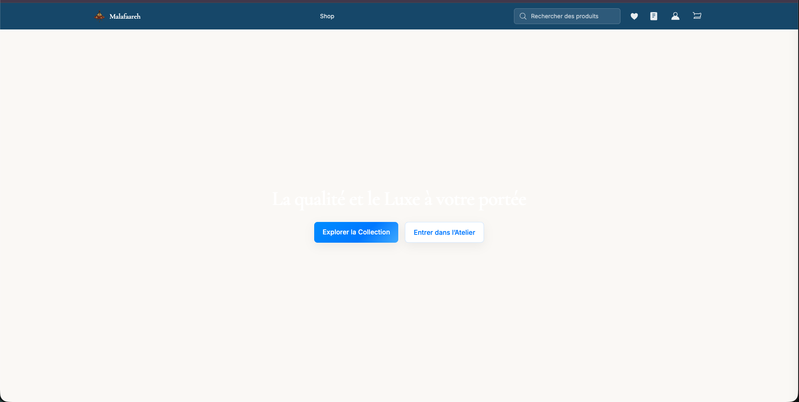
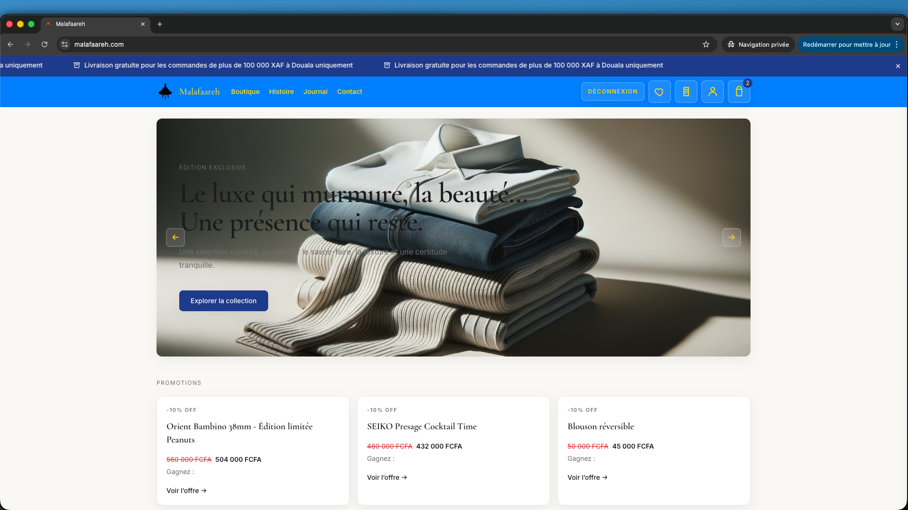

Architecting Malafaareh — Modern E‑Commerce with AI on GCP Serverless
Built on Google Cloud serverless with Firebase deploy & authentication, plus AI recommendations and post‑purchase follow‑ups.
Published:I designed and built Malafaareh.com, a modern e‑commerce platform focused on performance, reliability, and intelligent customer experiences. This article details the architecture, the AI recommendation/follow‑up system, and how Firebase fits into deployment and user authentication.
Architecture Overview
- Frontend: React/Vite single‑page app served behind a global CDN (Cloud CDN).
- Backend: Serverless API on Cloud Run (Gen2) with autoscaling, containerized Node.js services.
- Data: Cloud SQL (PostgreSQL) for transactional data; Cloud Storage for media assets; Pub/Sub for async workflows.
- Infrastructure: Provisioned via Terraform for consistency and repeatability.
- Observability: Cloud Logging + Monitoring with request tracing and alerting.

AI Recommendations & Follow‑Ups
The platform integrates AI for personalized product recommendations and post‑purchase follow‑ups (email/notifications). A lightweight recommender blends content signals (metadata, categories) with behavioral signals (views, cart events) to produce ranked suggestions. Follow‑ups use event triggers (Pub/Sub) to send context‑aware messages (e.g., complementary items, care instructions, or timely restock alerts).
- Feature embeddings and TF‑IDF for fast retrieval of similar products.
- Contextual rules and business constraints layered over model outputs.
- Throttled messaging with opt‑out compliance and deliverability checks.

Deployment & Authentication (Firebase)
Firebase streamlines deployment and user auth:
- Hosting/Deploy: CI/CD publishes the SPA to Firebase Hosting, which fronts Cloud CDN for low latency.
- Auth: Firebase Authentication handles email/password and social logins with secure session management.
- Integration: Auth tokens gate API routes in Cloud Run; role‑based access controls protect admin tools.
Results
- Sub‑second median page loads on core flows.
- Scalable serverless backend with cost‑aware autoscaling.
- Higher engagement and repeat visits via relevant recommendations.
If you’d like a similar architecture or AI integration, contact me: contact@ousseinioumarou.com · LinkedIn: @marubozu.